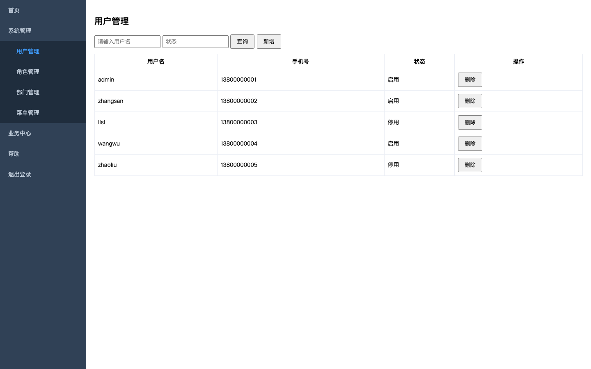
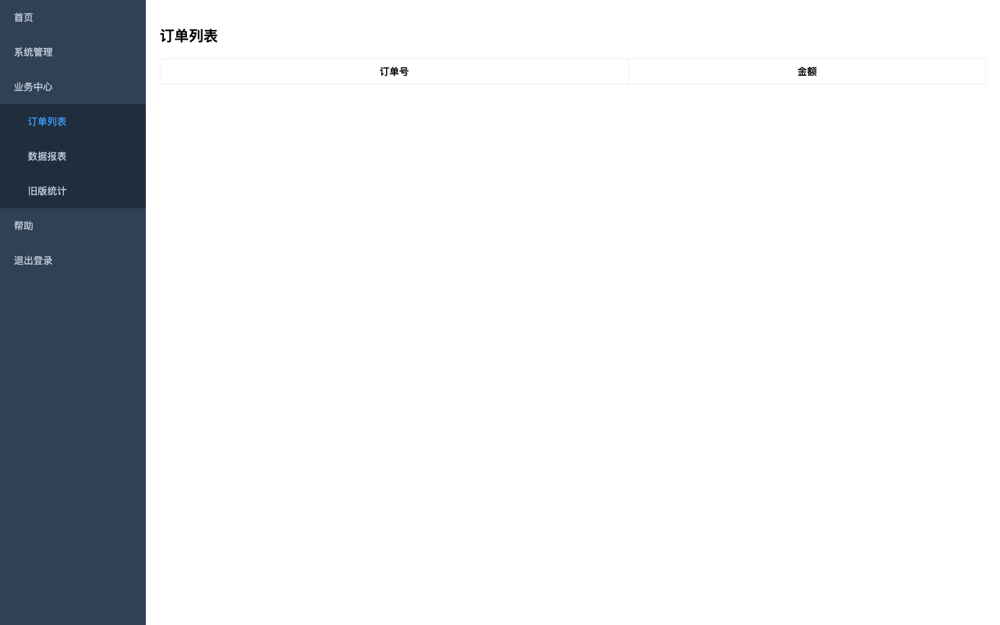
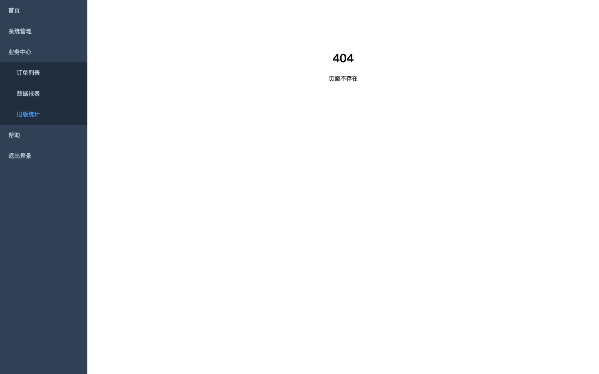

| 类别 | 哪里 | 问题 |
|---|---|---|
| 菜单 | 系统管理 / 角色管理 | 弹出错误提示：服务器开小差了；页面程序报错：服务器错误；接口返回 500：GET /api/roles |
| 菜单 | 系统管理 / 菜单管理 | 页面程序报错：Cannot read properties of undefined (reading 'items') |
| 菜单 | 业务中心 / 订单列表 | 业务错误码 500：数据库连接超时：GET /api/orders?current=1&size=10 |
| 菜单 | 业务中心 / 旧版统计 | 页面显示「404」：404 页面不存在 |
| 接口 | GET /api/orders | 业务错误码 500：数据库连接超时 |
| 接口 | GET /api/roles | 接口返回 500 |
| 接口文档 | GET /api/roles | 状态码 500 |
| 接口文档 | GET /api/orders | 业务错误码 500：数据库连接超时 |
| 接口用例 | 按状态筛选，结果里只有对应状态的人（启用） | 第 1 步「api /api/users」：$.data.records 第 3 条不符合（共 5 条，2 条不符合）：status 应为 1，实际 0 |
| 功能用例 | 页面上按「启用」筛选用户 | 第 3 步「查询」：$.data.records 第 3 条不符合（共 5 条，2 条不符合）：status 应为 1，实际 0 |
| # | 菜单 | 结果 | 问题 | 耗时 | 调到的接口 | 截图 |
|---|---|---|---|---|---|---|
| 1 | 首页 http://127.0.0.1:59549/#/home | 通过 | 1.5 秒 | |||
| 2 | 系统管理 / 用户管理 http://127.0.0.1:59549/#/system/user | 通过 | 1.5 秒 | 1 个200 GET /api/users?current=1&size=20&keyword= · 1ms |  | |
| 3 | 系统管理 / 角色管理 http://127.0.0.1:59549/#/system/role | 有问题 | 弹出错误提示：服务器开小差了 页面程序报错：服务器错误 接口返回 500：GET /api/roles | 1.5 秒 | 1 个500 GET /api/roles · 1ms · 接口返回 500 | |
| 4 | 系统管理 / 部门管理 http://127.0.0.1:59549/#/system/dept | 通过 | 1.5 秒 | 1 个200 GET /api/dept/tree · 1ms | ||
| 5 | 系统管理 / 菜单管理 http://127.0.0.1:59549/#/system/menu | 有问题 | 页面程序报错：Cannot read properties of undefined (reading 'items') | 1.5 秒 | ||
| 6 | 业务中心 / 订单列表 http://127.0.0.1:59549/#/biz/order | 有问题 | 业务错误码 500：数据库连接超时：GET /api/orders?current=1&size=10 | 1.5 秒 | 1 个200 GET /api/orders?current=1&size=10 · 3ms · 业务错误码 500：数据库连接超时 |  |
| 7 | 业务中心 / 数据报表 http://127.0.0.1:59549/#/biz/report | 注意 | 打开慢：3.6 秒 | 3.6 秒 | 1 个200 GET /api/report/summary · 3523ms | |
| 8 | 业务中心 / 旧版统计 http://127.0.0.1:59549/#/biz/legacy | 有问题 | 页面显示「404」：404 页面不存在 页面几乎是空的（正文 9 个字） | 1.5 秒 |  | |
| 9 | 帮助 / 在线文档 http://127.0.0.1:59549/docs.html | 通过 | 在新窗口打开（外链），只记网址不检查内容 |
| 接口 | 结果 | 调用次数 | 状态码 | 最慢 | 问题 | 在哪些页面 |
|---|---|---|---|---|---|---|
| GET /api/orders | 有问题 | 1（错 1） | 200×1 | 3ms | 业务错误码 500：数据库连接超时 | |
| GET /api/roles | 有问题 | 1（错 1） | 500×1 | 1ms | 接口返回 500 | |
| DELETE /api/users/{id} | 通过 | 1 | 200×1 | 15ms | ||
| GET /api/dept/tree | 通过 | 1 | 200×1 | 1ms | ||
| GET /api/menu | 通过 | 3 | 200×3 | 13ms | ||
| GET /api/report/summary | 通过 | 1 | 200×1 | 3523ms | ||
| GET /api/users | 通过 | 7 | 200×7 | 15ms | ||
| POST /api/users | 通过 | 1 | 200×1 | 13ms |
| 接口 | 说明 | 结果 | 状态码 | 耗时 | 问题 |
|---|---|---|---|---|---|
| GET /api/health | 健康检查 | 通过 | 200 | 1ms | |
| GET /api/menu | 菜单树 | 通过 | 200 | 1ms | |
| GET /api/users | 用户分页 | 通过 | 200 | 2ms | |
| GET /api/users/{id} | 用户详情 | 跳过 | 缺参数 id（在 api.openapi.params 里给值就会测） | ||
| GET /api/roles | 角色列表 | 有问题 | 500 | 1ms | 状态码 500{"timestamp":1793061157883,"status":500,"error":"Internal Server Error","path":"/api/roles"} |
| GET /api/dept/tree | 部门树 | 通过 | 200 | 1ms | |
| GET /api/orders | 订单分页 | 有问题 | 200 | 1ms | 业务错误码 500：数据库连接超时{"code":500,"msg":"数据库连接超时","data":null} |
| GET /api/report/summary | 报表汇总 | 注意 | 200 | 3511ms | 慢：3511 毫秒 |
| GET /api/export/{taskId} | 导出结果 | 跳过 | 缺参数 taskId（在 api.openapi.params 里给值就会测） |
| # | 接口 | 结果 | 说明 |
|---|---|---|---|
| 1 | 新增 | 通过 | POST http://127.0.0.1:59549/api/users → 200（5 毫秒） |
| 2 | 详情能查到，字段和提交的一致 | 通过 | GET http://127.0.0.1:59549/api/users/6 → 200（2 毫秒） |
| 3 | 按用户名搜得到 | 通过 | GET http://127.0.0.1:59549/api/users → 200（2 毫秒） |
| 4 | 删除 | 通过 | DELETE http://127.0.0.1:59549/api/users/6 → 200（1 毫秒） |
| 5 | 删除后详情查不到 | 通过 | GET http://127.0.0.1:59549/api/users/6 → 200（1 毫秒） |
| # | 接口 | 结果 | 说明 |
|---|---|---|---|
| 1 | api /api/users | 通过 | POST http://127.0.0.1:59549/api/users → 200（4 毫秒） |
| # | 接口 | 结果 | 说明 |
|---|---|---|---|
| 1 | api /api/users | 通过 | POST http://127.0.0.1:59549/api/users → 200（1 毫秒） |
| # | 接口 | 结果 | 说明 |
|---|---|---|---|
| 1 | api /api/users | 通过 | POST http://127.0.0.1:59549/api/users → 200（1 毫秒） |
| # | 接口 | 结果 | 说明 |
|---|---|---|---|
| 1 | api /api/users | 通过 | GET http://127.0.0.1:59549/api/users → 200（1 毫秒） |
| # | 接口 | 结果 | 说明 |
|---|---|---|---|
| 1 | api /api/users | 有问题 | $.data.records 第 3 条不符合（共 5 条，2 条不符合）：status 应为 1，实际 0{"code":0,"msg":"ok","data":{"records":[{"id":1,"username":"admin","phone":"13800000001","status":1},{"id":2,"username":"zhangsan","phone":"13800000002","status":1},{"id":3,"username":"lisi","phone":"13800000003","status":0},{"id":4,"username":"wangwu","phone":"13800000004","status":1},{"id":5,"username":"zhaoliu","phone":"13800000005","status":0}],"total":5}} |
| # | 接口 | 结果 | 说明 |
|---|---|---|---|
| 1 | api /api/users | 通过 | GET http://127.0.0.1:59549/api/users → 401（1 毫秒） |
| # | 步骤 | 结果 | 说明 |
|---|---|---|---|
| 1 | goto /#/system/user | 通过 | |
| 2 | choose #stv | 通过 | |
| 3 | 查询 | 有问题 | $.data.records 第 3 条不符合（共 5 条，2 条不符合）：status 应为 1，实际 0 截图{"code":0,"msg":"ok","data":{"records":[{"id":1,"username":"admin","phone":"13800000001","status":1},{"id":2,"username":"zhangsan","phone":"13800000002","status":1},{"id":3,"username":"lisi","phone":"13800000003","status":0},{"id":4,"username":"wangwu","phone":"13800000004","status":1},{"id":5,"username":"zhaoliu","phone":"13800000005","status":0}],"total":5}} |
| 4 | js [...document.querySelectorAll('#tbl td.status')].map(td => t | 跳过 |
| # | 步骤 | 结果 | 说明 |
|---|---|---|---|
| 1 | goto /#/system/user | 通过 | |
| 2 | click 按钮:新增 | 通过 | |
| 3 | fill {"提示:用户名":"ui_${rand}","提示:手机号":"13700000000"} | 通过 | |
| 4 | 保存，等新增接口成功 | 通过 | POST /api/users → 200 |
| 5 | expectToast 新增成功 | 通过 | |
| 6 | fill {"提示:请输入用户名":"${uname}"} | 通过 | |
| 7 | 搜索，列表接口只回一条 | 通过 | GET /api/users?current=1&size=20&keyword=ui_989995 → 200 |
| 8 | expectText #tbl | 通过 | |
| 9 | expectCount #tbl tr | 通过 | |
| 10 | screenshot 搜到新用户 | 通过 | 截图 |
| 11 | 删除（确认框自动点确定） | 通过 | DELETE /api/users/7 → 200 |
| 12 | expectToast 删除成功 | 通过 | |
| 13 | expectNoText #tbl | 通过 |
| # | 步骤 | 结果 | 说明 |
|---|---|---|---|
| 1 | api /api/users/${uid} | 通过 | DELETE http://127.0.0.1:59549/api/users/7 → 200（4 毫秒） |